專案簡介
在這個專案裡，我們會使用 Spark AR 內建的 Plane 來拼裝 3D 的長椅，並且在立體卡片的樹上放一個閃耀的星星
這個專案有點像是最後集大成、練習用的專案。比起前練兩個專案，這個專案裡面並沒有什麼新的技巧，只是整體稍微再複雜些
要練習製作濾鏡，最好的方法就是實際動手操作。使用 Plane 拼裝長椅的過程，其實就跟一般 3D 建模的流程很像，是所有 3D 軟體操作的基礎。所以在練習完這個專案以後，如果未來想要再學其他的 3D 軟體，也會比較容易上手
素材下載
本篇專案會用到的素材、卡片模板、以及已經完成的範例專案下載：Project C - Xmas Tree
- 如果你對 Spark AR 並不熟，而且還沒看過雪人卡片教學的話，強烈建議先看雪人卡片的教學。雪人卡片教學裡面有一些基礎的操作，在本篇教學中並不會提到
設定圖片辨識
在這個部分，需要進行以下步驟：
- 開啟新專案
- 把 fixedTargetTracker 物件加入場景中
- 匯入圖片素材
- 把 fixedTargetTracker 的辨識圖指定為 floor-tracker-image
以上步驟都完成後，畫面應該會如下圖：
如果你對以上這些步驟的操作不熟悉的話，可以去看專案Ａ雪人的教學，裡面有更詳細的步驟
設定場景物件
這次的場景設定跟之前有點不一樣。在之前兩個專案裡，場景中的圖片（女孩、家具等）都是與辨識圖平行，而這個專案裡，辨識圖代表的是地板，所以場景中的物件都要和辨識圖垂直
但由於在 Spark AR 內我們沒辦法旋轉辨識圖，所以我們只好讓所有物件都旋轉 90 度 ... 這會讓場景編輯時候的操作感覺有點怪怪的，不過別擔心，應該很快就可以習慣了！
建立雙面的 Plane
- 建立 chair-side-body-A 物件，並且材質使用 chair-side-body-A 當作貼圖。記得要勾選 “Alpha Test”，因為我們將要把這個 Plane 拼成一個長椅（會讓他感覺像是一個 3D 模型），所以我們需要讓他把透明的部分給切掉
當你旋轉這個 Plane 的時候，你可能會注意到這個 Plane 的背面透明的。這是因為 Spark AR 內建的 Plane 是單面的（許多即時渲染的引擎也是如此，例如 Unity 3D）。所以我們需要建立另一個背面的 Plane - 點右鍵建立另一個 Plane（或著在 Plane 上按右鍵選 “Duplicate”）
- 建立另一個 chair-side-B 材質給背面，貼圖選擇 chair-side-B，這張是給另一面使用的貼圖（有左右翻轉過）
- 把背面這個 Plane 的旋轉值 Rotation 設為 0, 180, 0
- 建議可以把這兩個 Plane 設為一個群組，這樣就可以同時移動、旋轉、縮放這兩個 Plane，感覺就像一張雙面的 Plane 一樣。群組的方法是：按右鍵新增 “Null Object” 並把兩個 Plane 都設為子物件
- 完成後，可以旋轉看看，看起來就會像是一個雙面的 Plane 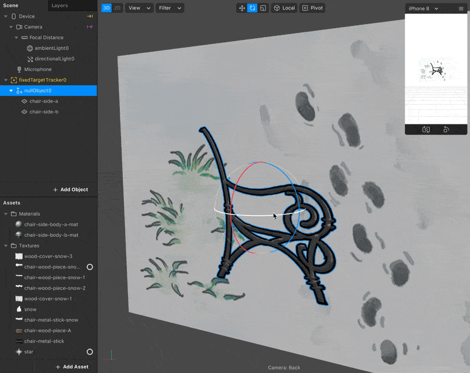
 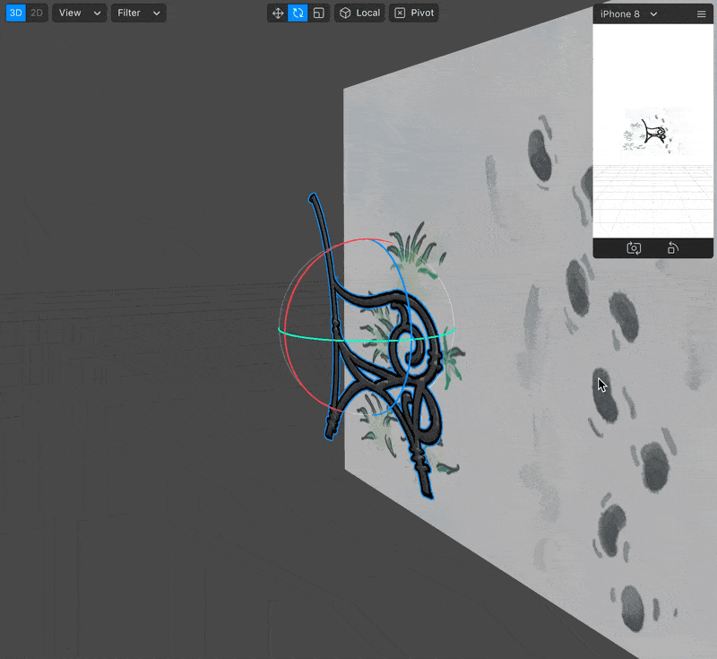
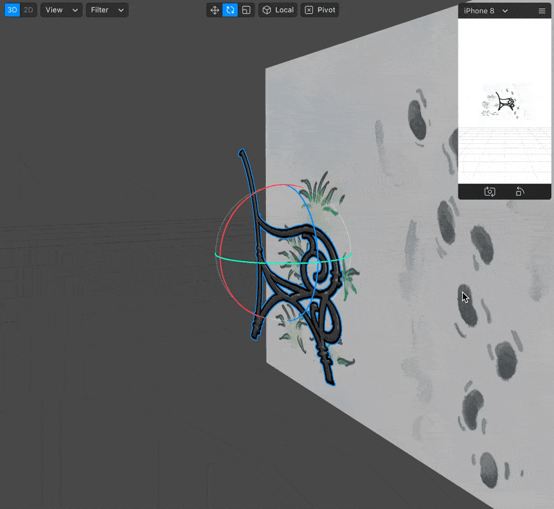


*材質的 Double-Sided（雙面）選項
其實要製作雙面的 Plane 有一個更簡單的方法，就是勾選材質裡面的 “double-sided” 選項

但是使用這個方法，物件對光源的反應是不正確的，透過材質選項產生的那一面感覺起來會不受光影響（即使照到光也暗暗的）

這是因為 3D 裡面的 "Light Normal"（光線法向量）的資訊的關係。3D 物件裡的每一個三角面都有一個法向量資訊（通常我們就稱為 Normal），這個 Normal 決定了這個三角面會受到哪一個角度的光源影響。而透過 “double-sided” 選項產生出來的這個面，和原來的 3D 物件共用同樣的 Normal 資訊，所以對光源的反應看起來才會怪怪的
所以說，如果你想要製作的雙面物件，是會受到光影響的話（材質是使用 Standard 材質），就不要使用這個 double-sided 選項。但如果你的這個物件是使用 Flat 材質（不受光影響的材質類型），就可以使用 double-sided 選項
組裝長椅
- 複製一個 chair-sided 物件，並放到另一邊，看你的長椅想要多長 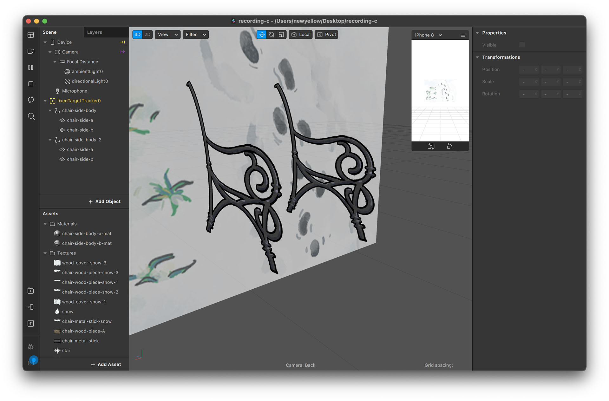
- 建立一個 wood stick 物件，同樣依照上面的方法，把這片木頭設定成雙面的。記得把兩片 Plane 群組在一起比較方便後續操作 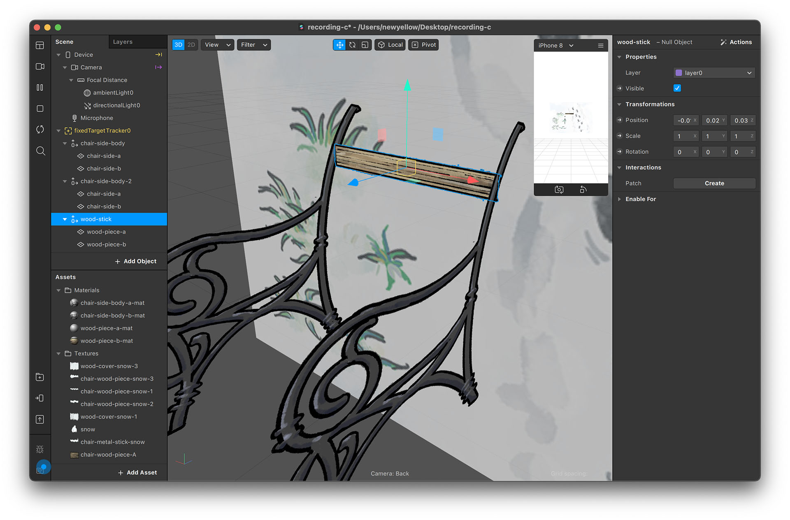
- 複製 wood stick 物件，並依你的喜好，把它們拼起來，長椅就完成了！ 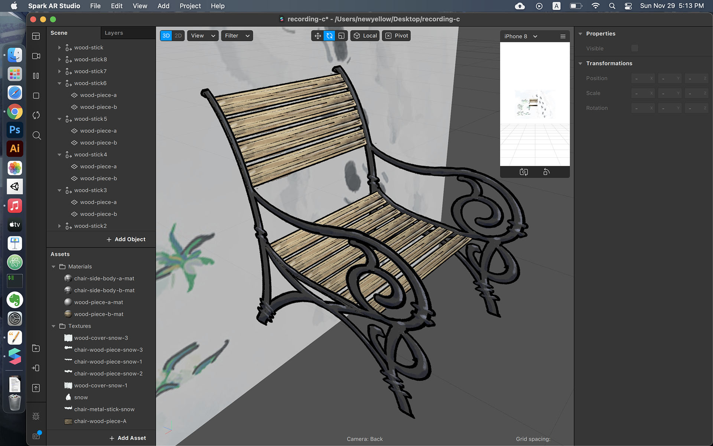
- 你可以再把整個長椅的所有物件都群組起來，這樣就可以對整張椅子做移動、旋轉、縮放
- 另外還有一張長椅的陰影貼圖 chair-shadow 可以用來製作陰影，這樣到時候在看濾鏡的時候，椅子看起來會更真實 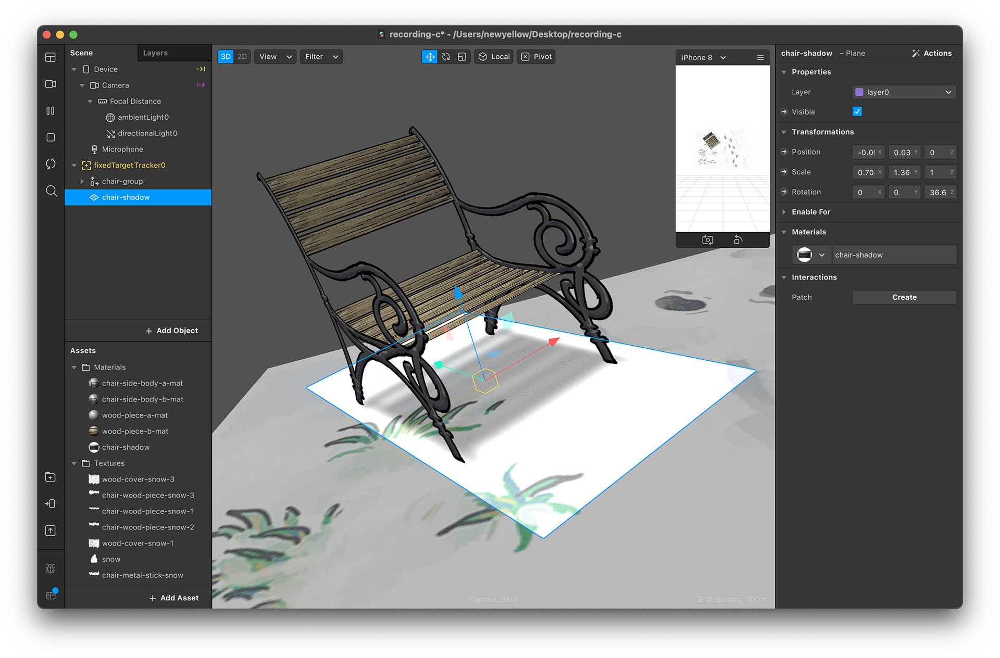

放置星星
- 用上面的方法來製作一片雙面的星星物件
- 把這個星星物件放到樹上的位置。雖然從 Spark AR 編輯器裡面看不到樹的位置，但我們可以看著卡片大概猜一下，看看實際卡片上的樹，位於辨識圖的哪個位置
- 把濾鏡傳送到手機測試看看，如果星星的位置不太正確，就重複調整，直到看起來感覺真的像是放到樹上為止


下雪
- 建立一個 Particle System 物件並設定參數，讓他看起來像是下雪。詳細的操作步驟在雪人專案裡面有，可以參考雪人專案裡面的教學內容
- 調高 birthrate（產生粒子的數量）和 lifespan（粒子的存活時間）來讓雪下得更大些。之所以要這麼做，是因為接下來我們要製作聖誕樹的遮罩，雪大一點比較看得出遮罩的效果，會更有空間感


讓星星發光
- 用類似的方式製作一個 Particle System 物件，並使用 glow-particle 這張圖作為粒子的材質貼圖

營造空間感
就像木屋專案裡提到的，在 AR 裡影像會顯示在前方，所以如果我們要讓飄雪，看起來像是真的環繞著立體卡片，我們就需要用到遮罩的技巧
製作樹木遮罩
- 使用 tree-mask 這張圖建立 tree-mask 材質，把 Opacity 設為 1、Alpha Test Cutoff 設為 0 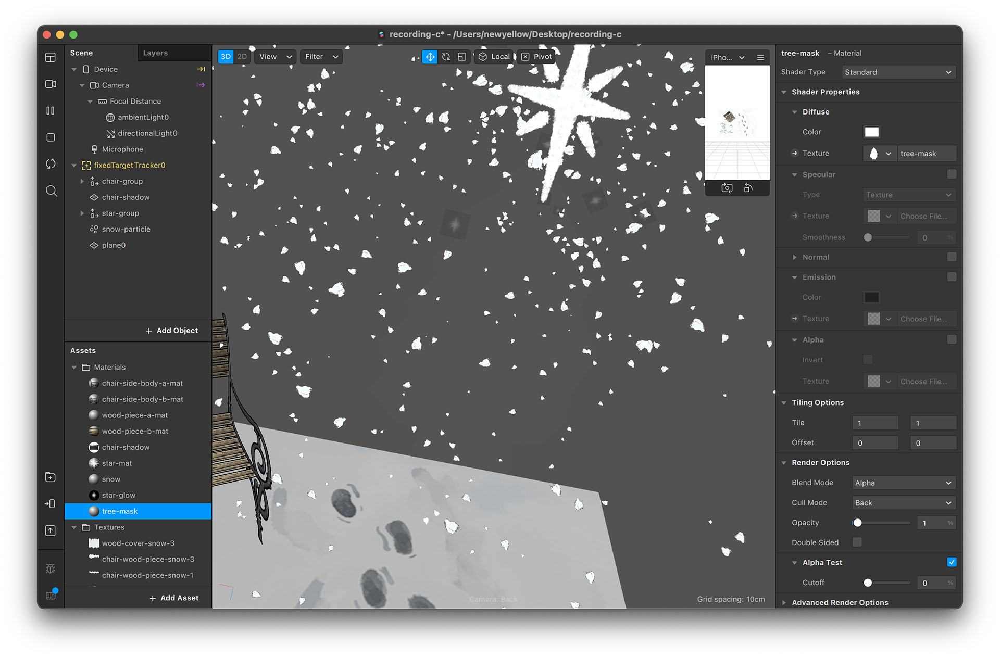
- 建立兩個 tree-mask 物件，並且新建立一個 tree-mask 圖層，把圖層排序放到最底下
- 這些步驟跟木屋專案裡面，製作窗戶遮罩的部分差不多。如果想看更詳細的步驟，可以到木屋專案的頁面查看 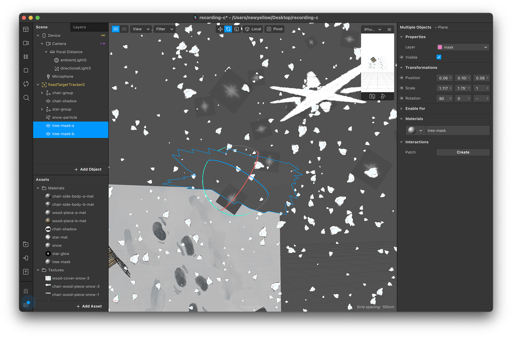
- 把這兩個 tree-mask 物件放到跟實際卡片上的樹一樣的位置，技巧就跟放星星的方式一樣，透過不斷在手機測試、調整位置的方法
- 樹的遮罩位置並不需要非常完美，因為這個專案裡面，會被遮罩遮住的只有雪花。由於雪花一直在飄動，所以遮罩的邊緣看起來並不明顯


*關於「測試、調整」位置的方法
在這個系列教學裡，我們經常用這種不斷測試、調整位置的做法，例如這裏設定樹的遮罩、或是雪人專案裡設定女孩位置的方法。有人可能會覺得這樣的方法很土法煉鋼、感覺有點遜。但事實上，這樣的方法為 AR 創造的更多的可能性！
通常在製作 AR 的專案時，我們是非常依賴「辨識系統」的功能。例如我們想要做一個「臉部特效濾鏡」，我們會需要系統具備「臉部辨識」的功能（而這正是 Spark AR 特別厲害的）。所以如果我們今天想要針對某一個「罐裝飲料」、或甚至是「雕像」來製作濾鏡，我們就會需要「罐裝飲料」或是「雕像」形狀的辨識功能。如果是這樣的話，那辨識系統永遠不可能滿足所有的需求（至少目前為止的科技是如此）
而使用這種測試、調整的擺放技巧，我們就不必依賴辨識系統，而可以透過單純一張平面辨識圖，來實現更多種 AR 效果。例如說，如果我們要對一個雕像製作濾鏡，我們可以在雕像旁邊貼一張海報之類的作為辨識圖，就可以透過測試、調整的擺放技巧，來對雕像製作 AR 效果。就像這個聖誕樹專案，我們不真的辨識卡片立體的部分（樹），而是辨識地板的圖
一些額外的效果
除了本篇教學有說到的內容外，這次的範例專案裡還另外做了一些效果，讓整體更豐富。如果你有興趣的話，可以打開範例專案看看，或是可以試著自己做做看。在此條列這些效果供參考：
- 可以放一些文字在卡片上，並且可以加上陰影（也有準備陰影用的圖），這樣在看 AR 的時候，看起來會更有真實感 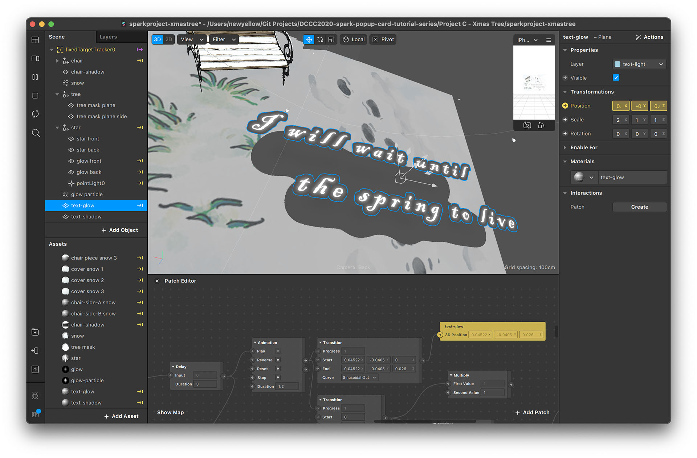
- 可以製作一些動畫，並且設定成辨識到卡片時觸發。例如：讓椅子由小變大、星星蹦出來、文字浮起來等 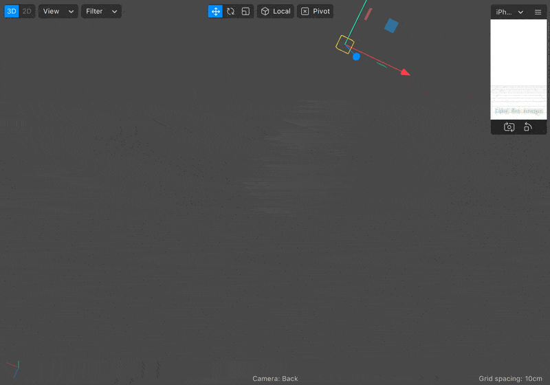 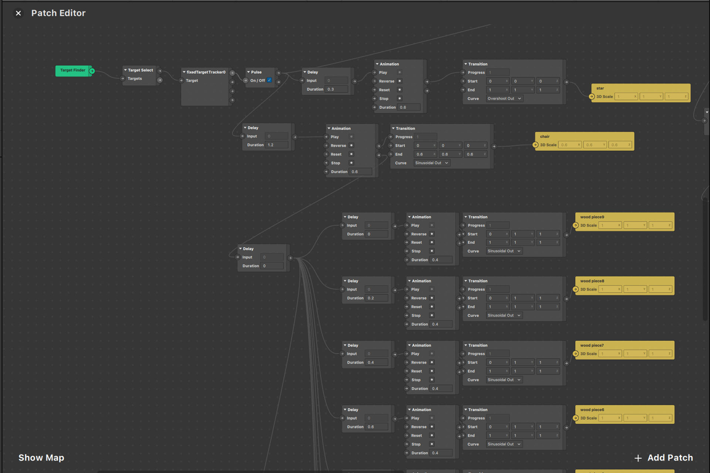
- 我另外還幫長椅的各個部位（扶手、木條）另外各畫了一張「堆雪」層，可以用來製作「雪慢慢堆積起來」的動畫效果（透過把透明度漸漸調高）
- 有一張星星用的光暈圖片，設定為 Additive 並且跟星星放在一起，可以讓星星看起來有發光的光暈的感覺 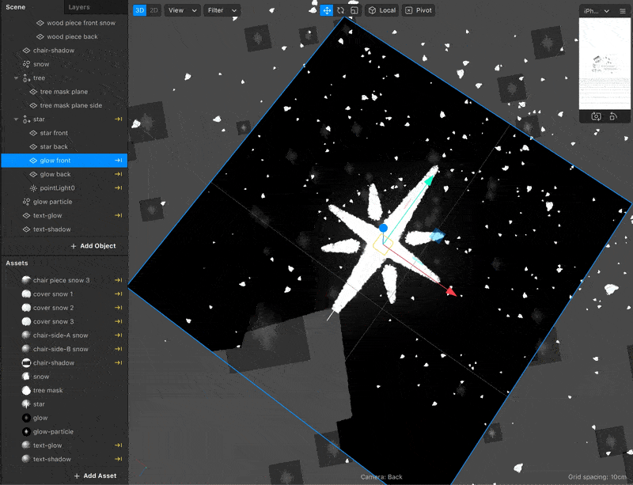

做到這邊，專案就大功告成囉！
如果都有依照上面的教學做的話，最後應該可以看到這樣的效果：